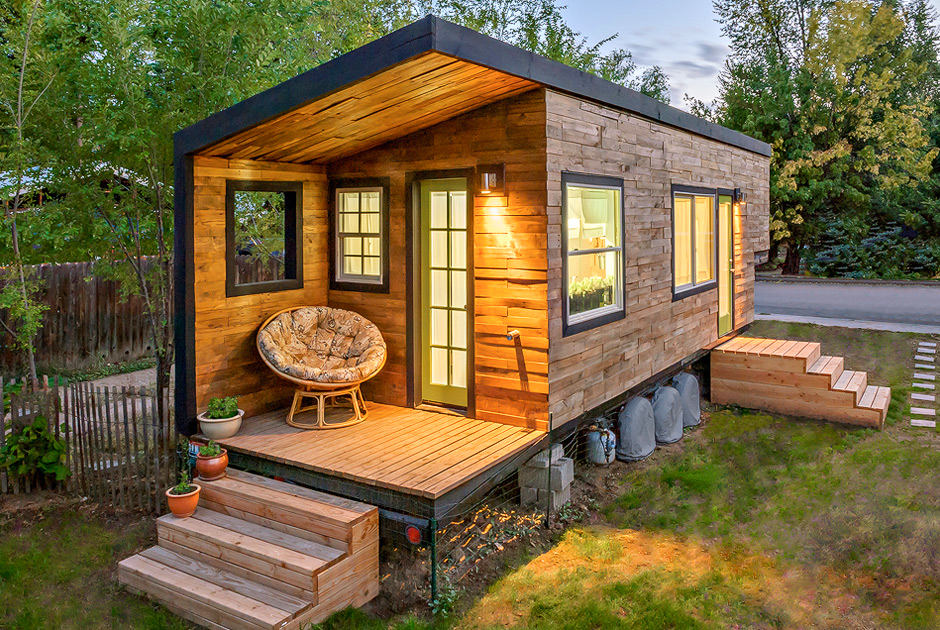
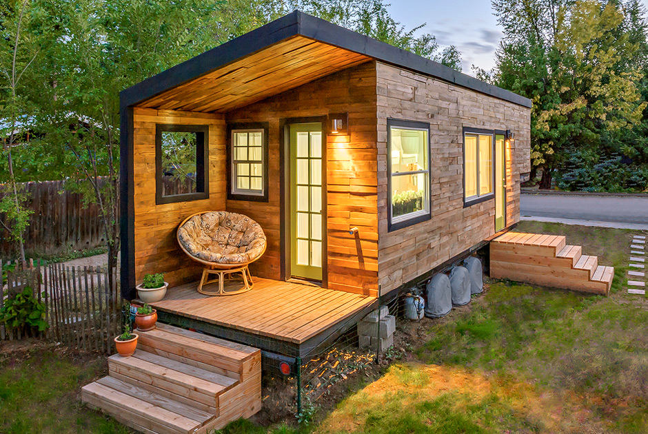
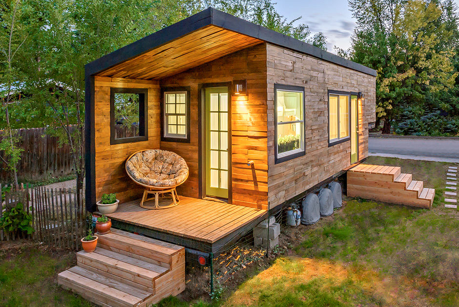

Компактность и комфортность – вот отличительные черты мобильного жилья. Если вы любите путешествовать или вынуждены работать по вахтенному методу вдали от дома, вам подойдёт такое решение бытовых проблем. Мобильный дом пригоден для временного или постоянного проживания весь год. Производство мобильных домов – это одно из направлений работы компании MODULEX (Украина). С 2006 года мы производим и монтируем мобильные здания разного предназначения.
Дом-трансформер собирается по каркасной технологии по заранее утверждённому проекту. На место монтажа он поставляется в виде отдельных СИП-панелей. Для возведения жилой постройки не нужен фундамент.Монтаж занимает 2 рабочих дня. Для этого задействуются 2 специалиста компании. В собранном виде дом может транспортироваться на платформе грузового автомобиля.
Сфера использования разборных конструкций очень широка. Мобильные дома не нужно регистрировать в службе землеустройства и БТИ. Такие передвижные сооружения используются в качестве:

{kind=link}